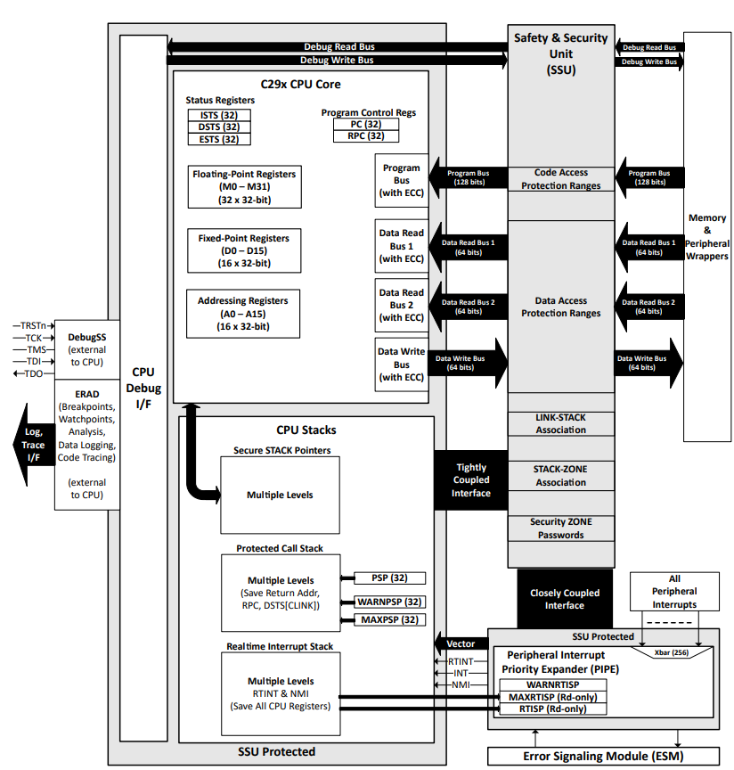
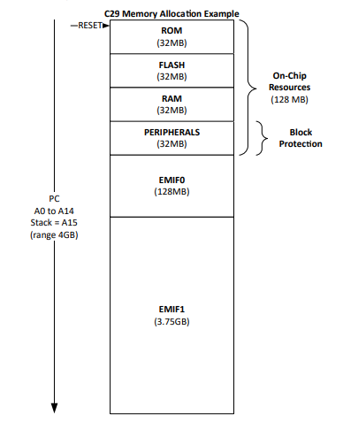
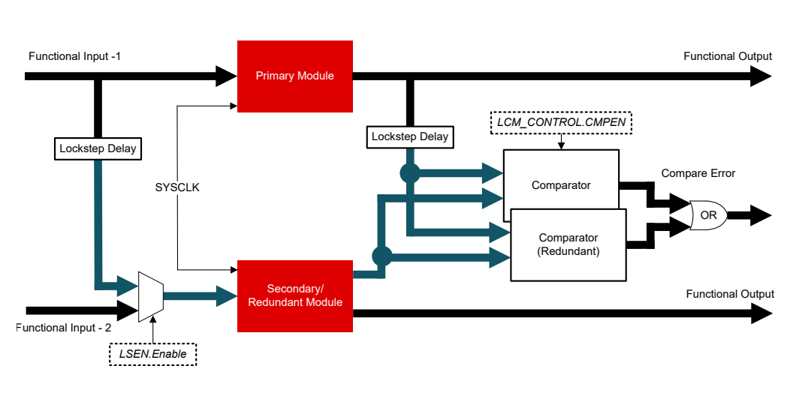

Overview of C29x Architecture and Accelerators#
This introductory module includes an architectural overview of the basic architecture of the C2000™ family of real-time control microcontrollers.
C2000 real-time control MCUs feature highly integrated analog and control peripherals, which provide a complete solution for demanding real-time high-performance signal processing applications, such as digital power, industrial drives, inverters, and motor control.
C29x CPU#
The C29x has a 64-bit architecture and advanced cybersecurity components such as the safety and security unit (SSU) which allows context isolation among threads running within the same CPU. It enables run-time security and freedom from interference (FFI), a feature which is typically found in microprocessors. The C29 core builds on TI’s market leading C28 core, delivering higher performance for general purpose and digital signal processing.
The C29x CPU Reference Guide describes the central processing unit (CPU) and the architecture in detail. Some of the major features of this CPU include:
Byte addressability and Data Types: The C29 supports byte addressing, with data types fully compatible with other popular CPU architectures such as ARM.
Fully Protected Pipeline: The CPU implements an 9-stage pipeline that prevents a write to and a read from the same location from occurring out of order.
Improved Parallelism: The CPU can execute from 1 to 8 instructions in parallel. Specialized operations to minimize discontinuities and accelerate decision making like if-then-else and switch statements.
Improved bus throughput: Capable of fetching up to 128-bit instruction packet every cycle. Capable of performing 8/16/32/64-bit dual reads and single writes per cycle.
CPU Registers: There are three sets of registers; Ax, Dx, and Mx. Ax registers (16 32-bit registers A0-A15 or eight 64-bit registers XA0-XA14) are primarily meant for address generation. Additionally, certain integer operations are executed in the early phase of pipeline for improved performance. Dx registers (16 32-bit registers D0-D15 or eight 64-bit registers XD0-XD14) are meant for integer fixed-point operations and Mx registers (32 32-bit registers M0-M31 or 16 64-bit registers XM0-XM30) are for floating-point operations.
Enhanced debug and trace capabilities: Specialized data logging and code flow trace instructions. Trace data capable of being logged in on-chip RAM or exported through serial communication peripherals.
ASIL-D safety capability with code isolation in hardware: Lock step core capable of independent execution in split-lock mode (acting as a separate core) or lock step execution (for redundancy).
Interrupts: The C29 supports regular interrupts (termed INT) and an optimized interrupt called real-time interrupt (RTINT) which uses a dedicated hardware interrupt stack.
Security: When code execution moves across STACKs, entry and exit points are enforced. Entry and exit points are well-defined points where one thread calls or branches into, or returns from, another thread.
Safety: The SSU enables isolation among these threads. In a simplistic form, SSU allows a user to define multiple associated memory regions (called Access Protected Regions (APR)) that can be tied together (through a concept known as a LINK) to create an isolated thread.
C29x Internal Bussing#
As with many high-performance microcontrollers, multiple busses are used to move data between the memory blocks, peripherals, and the CPU. The C29x memory bus architecture consists of 10 buses:
Program Bus: Data bus width is 128 bits, it can fetch 128-bits in a single cycle. C29 supports instruction packets from 16 bits up to 128 bits.
2 Data Read Buses: Data bus width is 128 bits, it can read 8-, 16-, 32- and 64-bit data in a single cycle.
Data Write Bus: Data bus width is 128 bits, it can write 8-, 16-, 32- and 64-bit data in a single cycle.
Debug Data Read Bus: It is similar to the data read bus. The SSU allows or blocks the debug accesses based on the security settings.
Debug Data Write Bus: It is similar to the data write bus. The SSU allows or blocks the debug accesses based on the security settings.
Interrupt Bus: It handles Reset, NMI, RTINT, INT interrupt signals and the interrupt vector.
ERAD Interface Bus: Breakpoint and watchpoints are implemented from external to C29x CPU using the ERAD (Real-Time Analysis and Diagnostics) module. This bus is used to interface the ERAD with the C29x CPU.
SSU Interface Bus: Security implementation is tightly coupled to the C29x CPU using the SSU interface bus.
Error Interface Bus: Program read errors, data read errors, and data write errors are interfaced to the Error Aggregator/ESM using this bus.

C29x Math Accelerators#
The C29x is also enhanced by math accelerators such as the ones below. Refer to the device datasheet for specific implementations.
Floating Point Unit (FPU): The addition of the Floating-Point Unit (FPU) to the fixed-point CPU core enables support for hardware IEEE-754 single-precision floating-point format operations. The FPU adds an extended set of floating-point registers and instructions to the standard C28x architecture, providing seamless integration of floating-point hardware into the CPU. FPU is built into the CPU. FPU64 is only present in CPU3 which provided additional support for double-precision floating point operations also.
Trigonometric Math Unit (TMU): TMU extends the capability of the CPU to efficiently execute trigonometric and arithmetic operations commonly found in control system applications. It also provides hardware support for IEEE-754 single-precision floating point operations which accelerate trigonometric math functions. TMU is built into the CPU. TMU64 is only present in CPU3.
Note:
Unlike C28x, Control Law Accelerator (CLA) and Viterbi, Complex Math and CRC Unit (VCU) are not present in the C29x.
Memory Map#
The C29x CPU has a dedicated stack pointer (SP = A15) that can access the full 32-bit address range of the CPU. The C29x CPU supports separate program, data read, and data write buses. The memory is unified with one 4GB image. On the C29x CPU, every peripheral instance is mapped within a 4KB address range.
Block Protection: This feature protects the order of Read and Write operations to peripheral registers and avoids pipeline effects.


Lockstep Comparator Module (LCM)#
The main idea and implementation of the LCM is similar to the C28x LCM.
LCM Error Handling#
When an error is generated by the LCM module, and error event is sent to the error signaling module (ESM) which can be configured to take appropriate action like error status pin indication, generation of an interrupt or NMI to the CPU. The LCM error can be triggered by a Functional failure, a Self-test failure or a Force Compare Error Request.

Note:
The Module described in this block diagram can be either a CPU (for example, CPU1) or a peripheral (for example, RTDMA, CPU PIPE, CPU Timers) depending on availability for the device.
LCM Redundant Module#
The key difference between the LCM of C29x and C28x is the presence of another comparator block to provide redundancy of the comparator block. This enables the availability of the other comparator block when one is going through self-test. This also provides additional failure protection capability for the comparator logic.
Also, if the redundant module output is not required in functional safety requirements, then it can be used for functional output as well.
The secondary lockstep (redundant) module is enabled upon startup but lockstep comparison has to be enabled in software. After the lockstep compare is enabled, the comparison is performed continuously every cycle starting from the immediate next cycle. Any difference between the primary and secondary modules generates an error signal from the LCM to the SoC.
Lockstep Comparators have to be re-enabled in software after CPU reset or any higher-level resets as these disable the comparators.